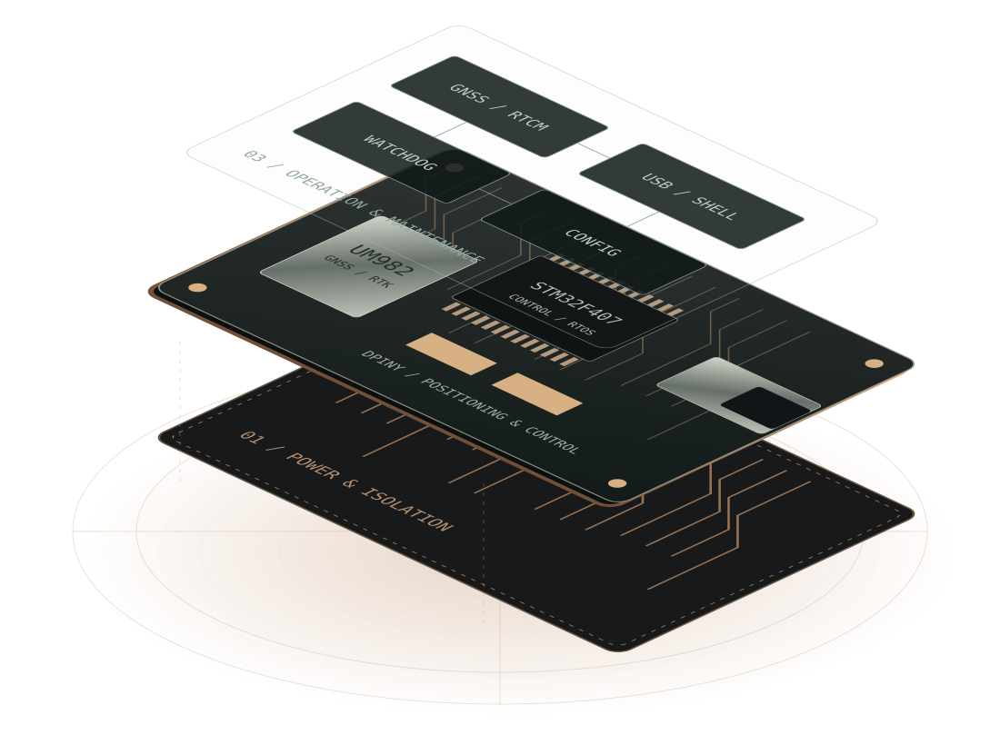
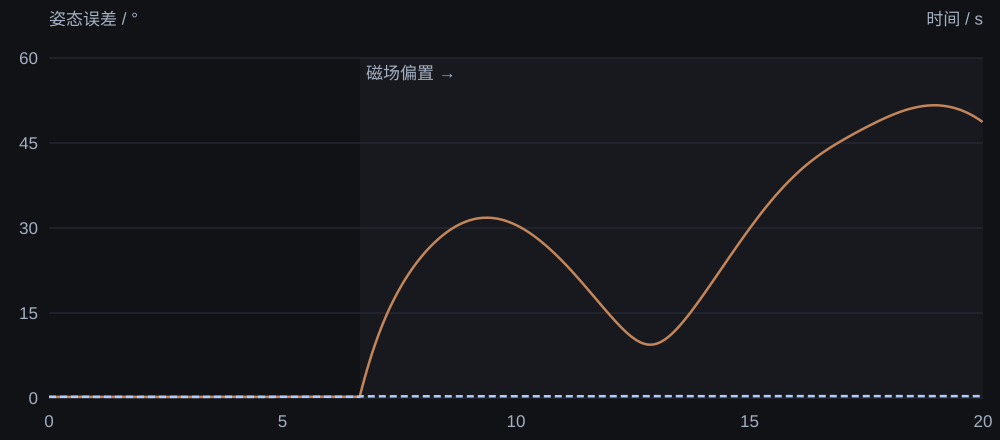

dpiny

非实物照片 / 非电路设计
双路供电 · 卫星定位 · 固件维护
一台可维护的
RTK 基准站。
将供电、定位模块和设备维护整合在同一套嵌入式系统中。
设备能输出数据，
还要能被维护。
dpiny 是面向固定部署的 RTK 基准站项目。工作不仅是接通 GNSS 模块，还包括供电隔离、数据转发、配置管理，以及复位后的维护入口恢复。
复位之后，
维护通道仍能恢复。
公开材料记录了构建、烧录、USB CDC 复位恢复和 RTCM 帧检查。它们是已有台架记录，不是本次硬件复测或长期可靠性结论。
固件怎样组织？ +
FreeRTOS 组织 GNSS 处理、USB CDC、配置与看门狗；工具目录提供构建、烧录、RTCM 检查和寄存器读取入口。
Core/ GNSS · Shell · Configuration · Watchdog USB_DEVICE/ USB CDC Drivers/ STM32 HAL / CMSIS tools/ Build · Flash · RTCM · Bench checks查看公开固件与记录 ↗
ATTITUDE ESTIMATION
干扰出现时，
朝向如何判断？
姿态算法将传感器读数转换成设备朝向。Aerakia 关注磁场干扰、异常输入与数据中断时的估计响应。
同样的磁场偏置，
两种不同的响应。
6.66 秒起加入磁场偏置。曲线保留 2000 个实际输出样本，没有手工拟合或更换数据。

这些数值只说明该确定性合成场景下的算法响应，不构成飞行精度、安全或可靠性结论。公开范围为算法层与主机验证，不是完整飞控。
MICROSCOPIC VISION PLATFORM
从显微图像，
走向精密对准。
Splicia 探索成像、视觉估计与运动控制之间的协作。当前已完成 Linux 平台调试与相机链路排查，模块边界仍在设计，闭环对准尚未实现。
已完成与未实现范围 +
已完成：IMX296 相机发现、media 拓扑与 RAW 输出排查。设计中：采集、视觉、估计、运动、UI、日志和回放边界。未实现：光纤几何提取、标定双视图融合、闭环对准与量化性能验证。